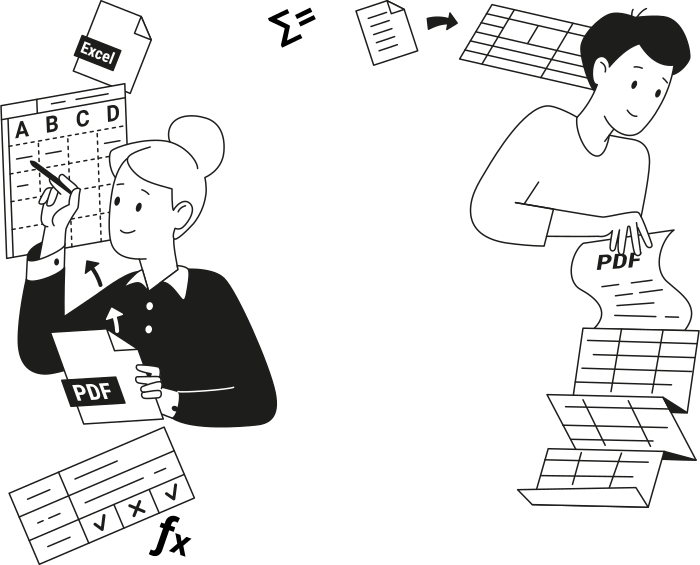
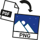
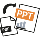

Convert Your Bank Statements to Excel or CSV Instantly
Great user interface, easy to use, and pay as you go. Awesome experience!


PDF editor used by industry leaders*
Why Convert PDF Bank Statements to Excel or CSV?

Static PDF bank statements become editable Excel or CSV files you can analyze, update, and share.

By exporting bank transactions into Excel or CSV, you avoid manual data entry, save time, and minimize errors.
Built for Accurate Bank Statement Conversion


Made for Anyone Working With Numbers
Accountants and Bookkeepers
Small Business Owners
Freelancers and Contractors
Individuals Managing Personal Finances
Convert Your Bank Statements Today
Upload your bank statement and convert it to Excel or CSV in minutes with our PDF tool.

All PDF tools in one place
More tools
Convert Word to PDF
Convert JPG to PDF
Convert PNG to PDF
Convert PDF to JPG

Convert PDF to PNG
Convert Markdown to PDF
Convert Excel to PDF

PDF to PowerPoint
Convert HEIC to PDF
Convert PowerPoint to PDF
Add Text
Change Text
Compress
Compare PDF
Add Image
Split File
Rearrange Pages
Rotate Pages
Bates Numbering
Extract Pages
Unlock PDF
Protect PDF
Request Signature
Remove Signature Background
Chat with PDF
PDF Summarizer
Generate PDF
Share PDF
How to Convert Bank Statements to Excel or CSV
 1
1Upload your PDF bank statement
 2
2Choose Excel or CSV conversion
 3
3Download your file
Why people prefer pdf.net
Simple and easy for daily use
Our online PDF editor features a clean, intuitive, and user-friendly interface designed for amateurs and professionals alike. You can navigate it with ease and edit your PDF file, even if you’ve never done it before.


All‑in‑one PDF editor
Our editor offers a robust and comprehensive set of features that allow you to customize your documents, merge them, sign them, and much more. No need to transfer your files between several applications anymore.

Keeping formatting without issues
No more messy documents and inconsistent formatting across multiple systems or devices. Our online PDF editor is cross-platform compatible and maintains uniformity whether you’re using a PC, MacOS, smartphone, or tablet.

People all over the world trust pdf.net to edit their docs
I can attest that this by far is budget-friendly and well worth it! does everything it says it does plus more.

I can attest that this by far is budget-friendly and well worth it! does everything it says it does plus more.
Today we were submitting an RFP and got hit at the last minute with a bunch of PDF gymnastics: extracting individual pages from a 50-page master PDF, editing them, and merging them back into a new submission document. Without this tool, we probably would not have made the deadline.

I was able to get my documents signed and got it on time and I did it all for free thank you so much.

Very easy to navigate through and use.

Frequently asked questions
- Are my bank statements safe when using this converter tool?
- Yes, your bank statements are safe when using our converter tool. They are processed through secure connections and handled privately, with files automatically removed after conversion to protect sensitive financial information.
- What file formats are supported for bank statement conversion?
- The tool supports PDF bank statements and lets you export them to Excel or CSV formats. These files can be opened and used in common spreadsheet and accounting software for reviewing transactions, organizing records, and financial reporting.
- Can I convert multiple bank statements at once?
- No, you cannot convert multiple bank statements to CSV or Excel at once. Our online PDF tool currently processes one file at a time to maintain reliable results. However, we may expand this feature in the future to support batch conversions.
- How accurate is the conversion from PDF to CSV or Excel?
- Our bank statement converter accurately extracts transaction tables, including dates, descriptions, and amounts, and converts them into structured Excel or CSV files suitable for financial analysis.
- Do I need special software to convert bank statements?
- No, you don't need special software to convert bank statements. Our converter is fully browser-based. With a reliable Internet connection, you can upload, convert, and download Excel or CSV files directly from your browser.
- Can I edit the Excel or CSV file after conversion?
- Yes, you can edit the Excel or CSV file after conversion. Once you download your bank statement in Excel or CSV format, you can open it in spreadsheet tools to sort transactions, adjust data, add notes, and prepare reports as needed.
- Can I convert to Excel using this bank CSV export tool?
- Yes, you can convert to Excel using this bank CSV export tool. Just choose the Excel format before you download and get a spreadsheet-ready file for sorting, editing, and financial analysis.
- Can I download my bank statement in an Excel template format?
- You can download your bank statement and edit it into an Excel template. A bank statement Excel template allows you to organize transactions, add formulas, and customize the layout for tracking, reporting, or record keeping.